TinkerCAD
Using the plan supplied you will model in 3D with Tinkercad the support of the servos of the robot quadruped.
Tinkercad is a 3D modeling tool online: it allows the simple and intuitive creation of 3D models in your browser. The resulting objects can be used in many applications, including 3D printing. This solution does not require installation, to use it simply visit www.tinkercad.com, then create an account by clicking on "register" at the top right of the page.
Follow the steps required to create your account, if you already have an Autodesk account sign in with your login credentials.
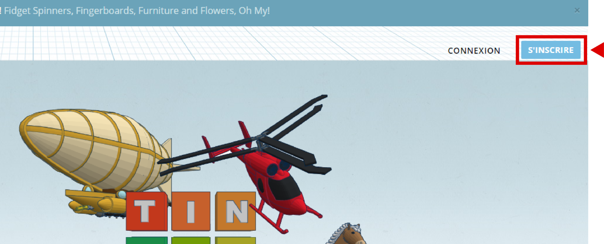When you first open it, it is very likely that the software will invite you to follow a lesson on moving objects: to skip this step you just have to click on the tinkercad logo at the top left of the screen. You will find the dashboard of your account.
The tinkercad dashboard allows you to access the different features of the site: create, edit and share designs; Create, edit and share electronic circuits, organize your designs into projects etc.
To start, we'll create a new design: Click "create design" under "my recent designs".
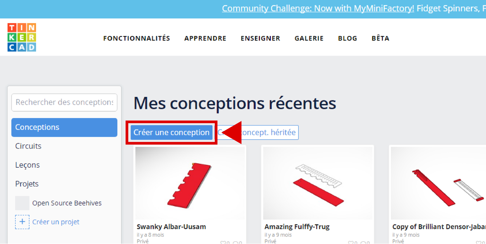Any changes you make will automatically be saved to your account, provided you are connected to the internet. You can return to your dashboard at any time by clicking on the Tinkercad logo at the top left. To take back a design you started just click on "edit" in the preview thumbnail of your design.
The Tinkercad interface
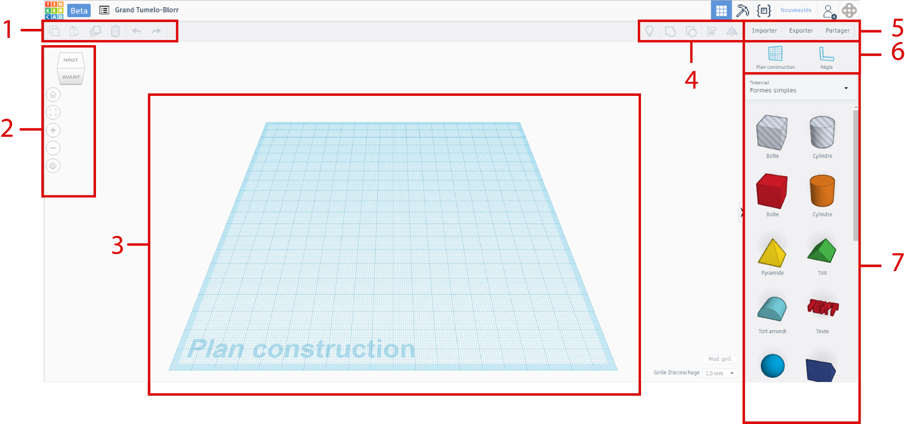- 1 - Editing tools: copy-paste, duplicate, delete, cancel, and restore
- 2 - Navigation: cubeview, zoom, extended view, orthogonal view
- 3 - Construction plans: reference surfaces for modeling
- 4 - Object properties: view, group, disassociate, align, reverse
- 5 - File exchange: import, export, share
- 6 - Modeling guides: construction plans, rules
- 7 - Object libraries: simple shapes, text, etc.
Navigation
To zoom in and out of the view you can use the scroll wheel, the [+] and [-] keys on your keyboard, or the + and - navigation buttons on the left side of the interface.
To move in the view hold down the [Shift] key on your keyboard and then use the right click of your mouse. Right-clicking only rotates the view.
The cubeview allows you to display predefined views by clicking on the faces, vertices, and edges of the cube. You can return to the original view at any time by clicking the "home" button below the cubeview.
Construction grid
Before starting we will change the pitch of the grid to be able to model to 10th of mm: choose 0.1mm in the drop grid drop menu in the bottom right of the construction plane.
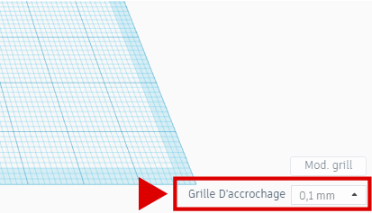Create and edit simple shapes:
In a first step we will model schematically a servomotor which will serve as a reference for the construction of the support.
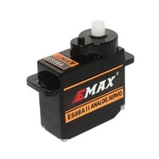First, drag a box on the work plane from the shape library.
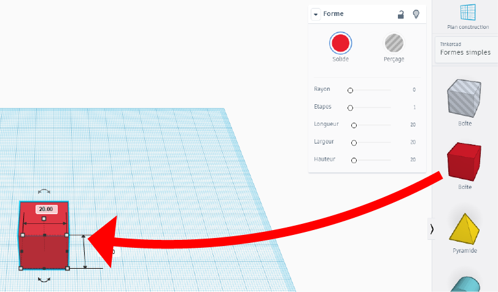Select the box you just placed by clicking on it and then in the shape window to the right enter the following values:
- - Radius: 0 (round radius of the edges of the box)
- - Steps: 1 (rounding steps)
- - Length: 11.6 mm
- - Width: 24 mm
- - Height: 19 mm
You can also change the dimensions by clicking on the white handles that appear around the selected object.
This box represents the body of the servomotor, we will now add two outlets on each of the two small faces, these debars allow to fix the motor to the support.
Move to the view using the cubeview (click-drag or click on the predefined views) or right-click to display the left side of the box.
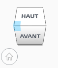 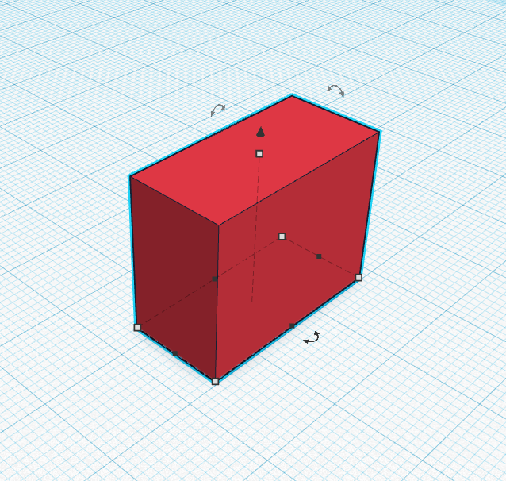Place a construction plane on the left side of the box by sliding it from the right menu.
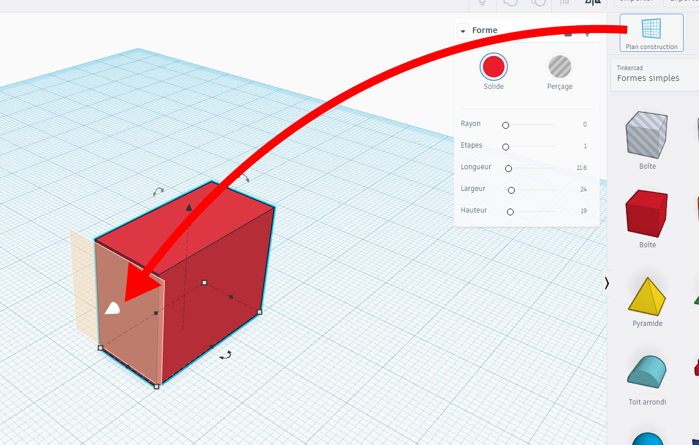Then do the same to place a ruler on the bottom left corner of the face.
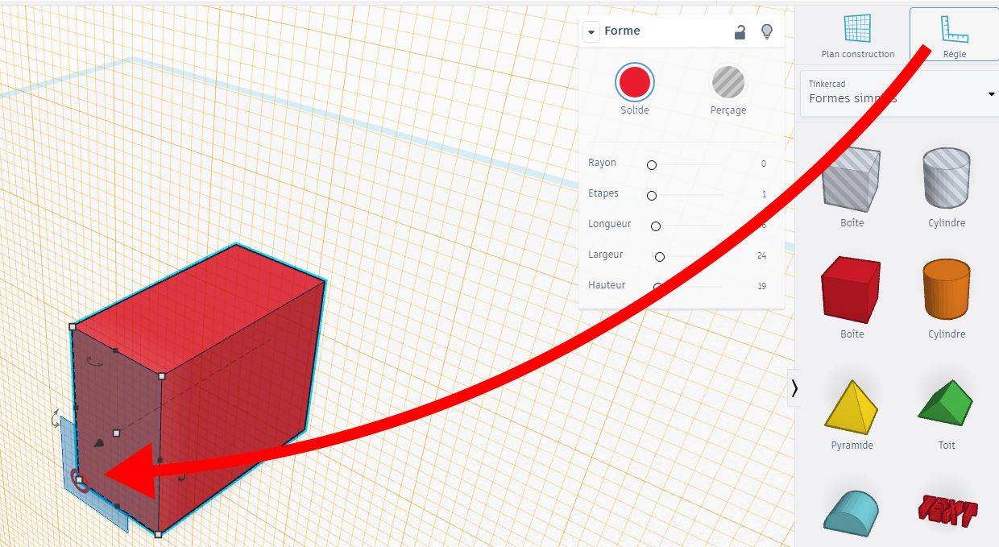Be careful to place the rule: it must be precisely aligned with the cube: zoom as much as possible on the center of the ruler (black circle) then reposition it on the corner of the box (click and drag).
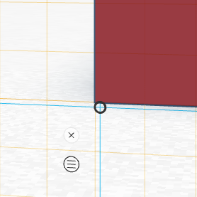Incorrect alignment of rule
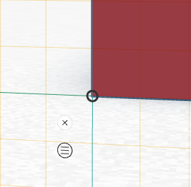Correct alignment
It may also be that your box is not perfectly aligned with the grid: if it is, simply place it in the view (click and drag) and then reposition the ruler.
The rule you just placed will allow us to position the border on the face.
Drag a box onto the work plane and set its dimensions:
- Radius: 0
- Steps: 1
- Length: 1.8 mm
- Width: 11.6 mm
- Height: 4.3 mm
Place the box at 0.00 of the vertical ruler and at 13.7 of the horizontal ruler: click on the white boxes to set the values.
Next step: Place the fixing screw hole on the edge.
Place a construction plane on the top side of the border and then move the ruler to position it on the lower left corner of the face, click the center of the ruler to rotate it. Zoom in for more precision and make sure the ruler aligns.
 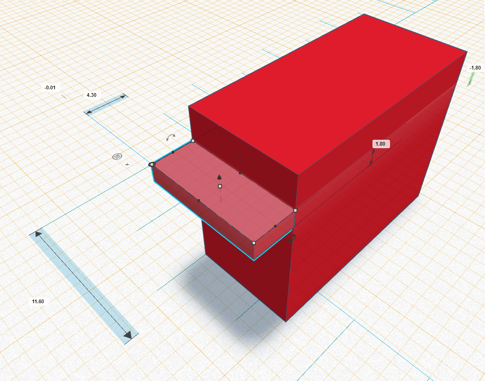
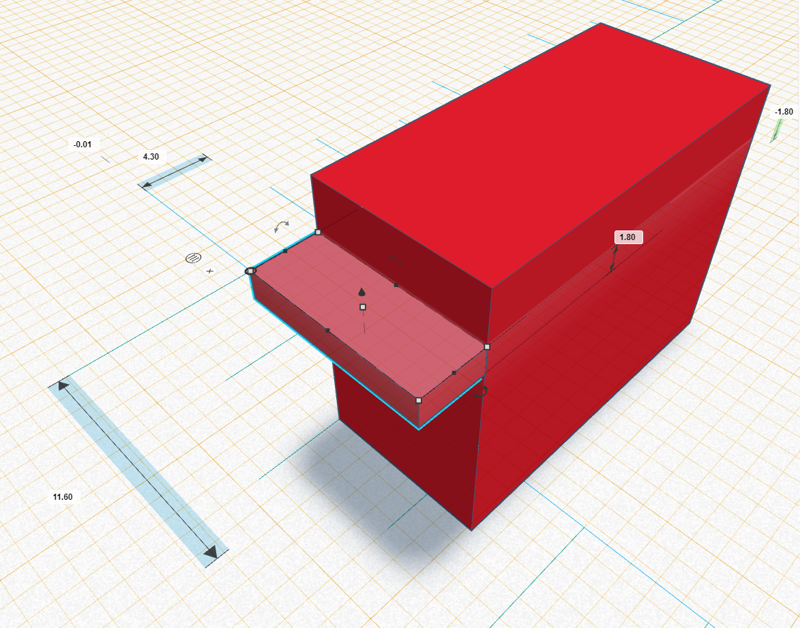
From the shape library drag a cylinder to the construction plane, specify 2.1mm for width and length and 8mm for height. Position the bottom of the cylinder at -7mm from the work plane and place it at 1.2mm from the width rule and 4.7mm from the length rule. Enter the values by clicking on the white boxes: if necessary, refer to the following image.
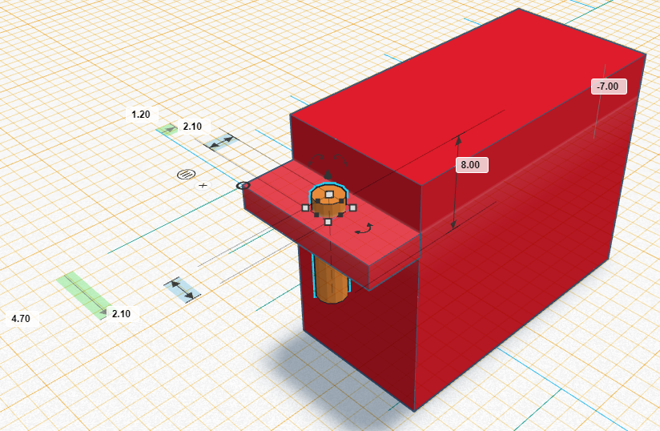In Tinkercad all objects can be either solids or holes: define the cylinder as Hole in the Form window.
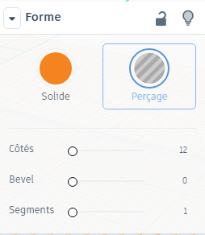 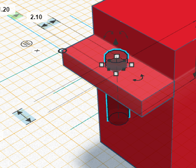The cylinder will change its appearance and will be displayed in hatch.
Add the border to the selection by holding down the Shift key on your keyboard, then group the two objects by clicking on group at the top right of the view or by pressing [Ctrl]+[G]. The drilling is now complete.
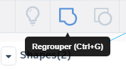 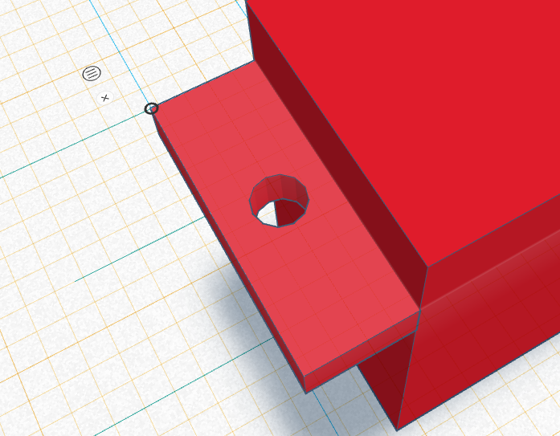Now we'll duplicate the border on the other side of the engine body, select it, and then click duplicate. Then move the duplicate border 28.28mm lengthwise by entering the value as before.
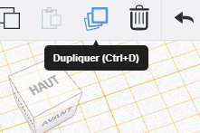 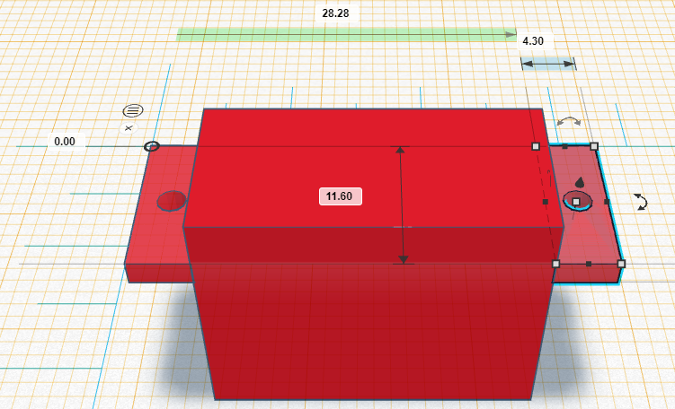Group all three solid (both borders and body), select them one by one by holding the Shift key on your keyboard, and then click group or press [Ctrl]+[G].
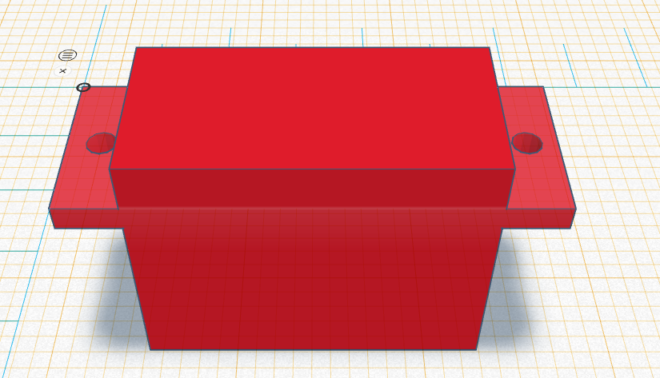The schematic modeling of the servomotor is now complete, we will reposition it and then duplicate it to create the second motor which will also be integrated in the support.
First, replace the original construction plane by dragging a construction plane anywhere in the view outside of your 3D model. Reposition the ruler, this time on the lower right corner of the actuator body, as in the previous steps make sure it is positioned correctly by zooming in on the view.
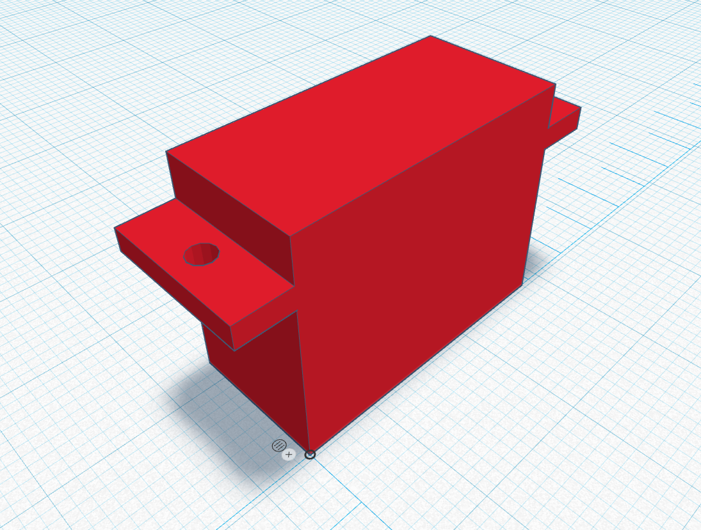Select the motor and rotate it 180 ° in the direction of the width by clicking on the black arrows of rotation:
- 1. Axis of rotation in the direction of the width
- 2. Axis of rotation in the direction of the length
- 3. Axis of rotation in the direction of the height

The two concentric circles that appear allow you to define the rotation increments: if during the rotation your pointer is outside the circles the increments will be 1 °, inside them will be 22.5 °. Holding the Shift key will change to 45 °.
Enter the rotation angle in the dialog box or rotate with the mouse.
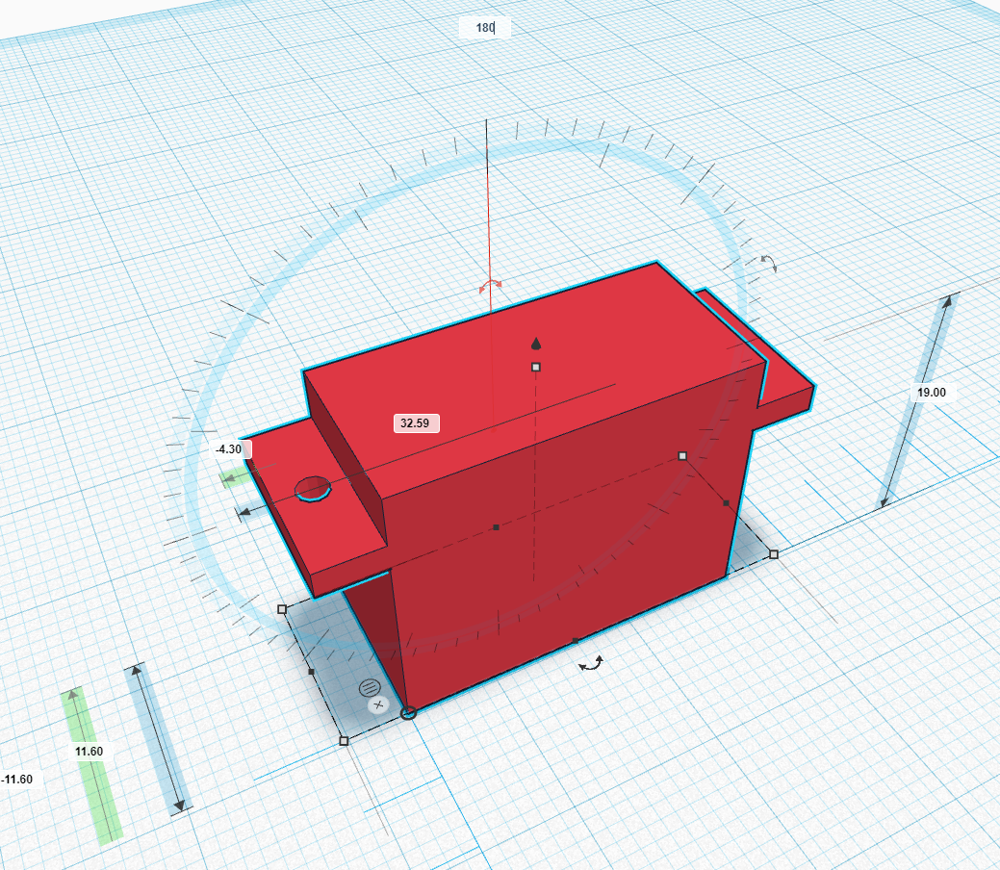Click duplicate or press [Ctrl]+[D].
Position the second motor at 11mm from the first in the width direction, enter the value on the construction rule.
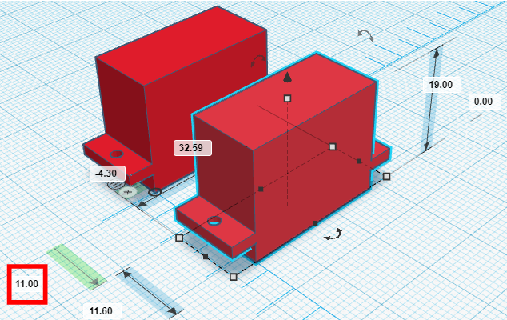Rotate the motor you have just copied at -90 ° in the width direction.
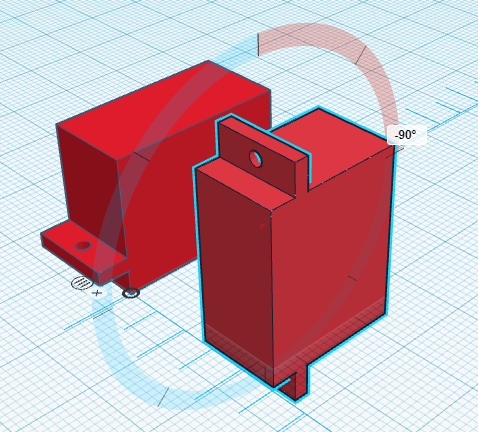Then reposition it on 0.00 in width and -4.3 in height.
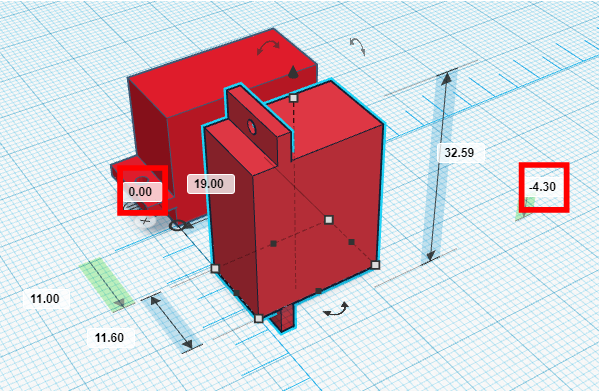The servomotors are in their final position.
In the next step you will model the support that will be printed in 3D using the different tools that you have just seen.
Here are 3D renderings of the result you need to get.
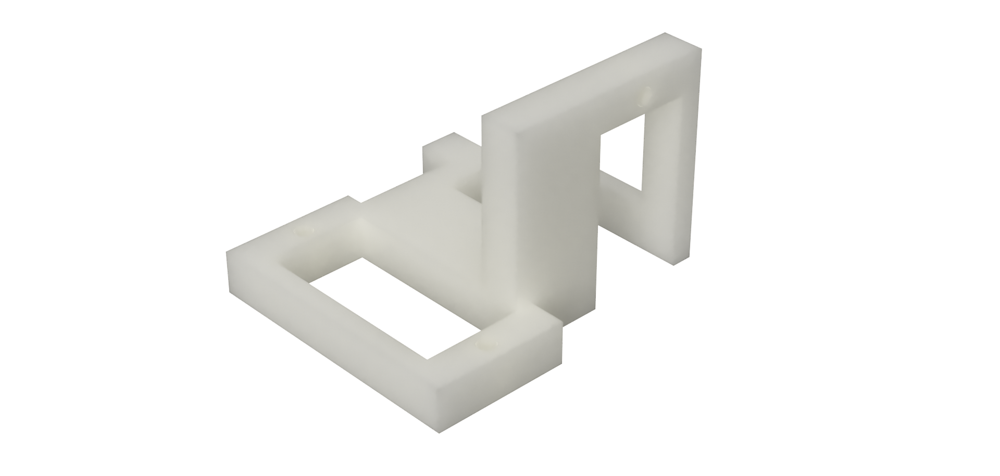 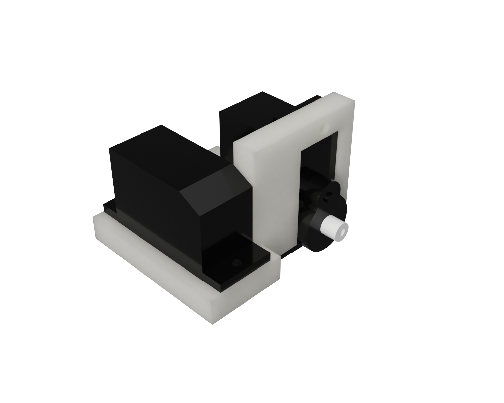 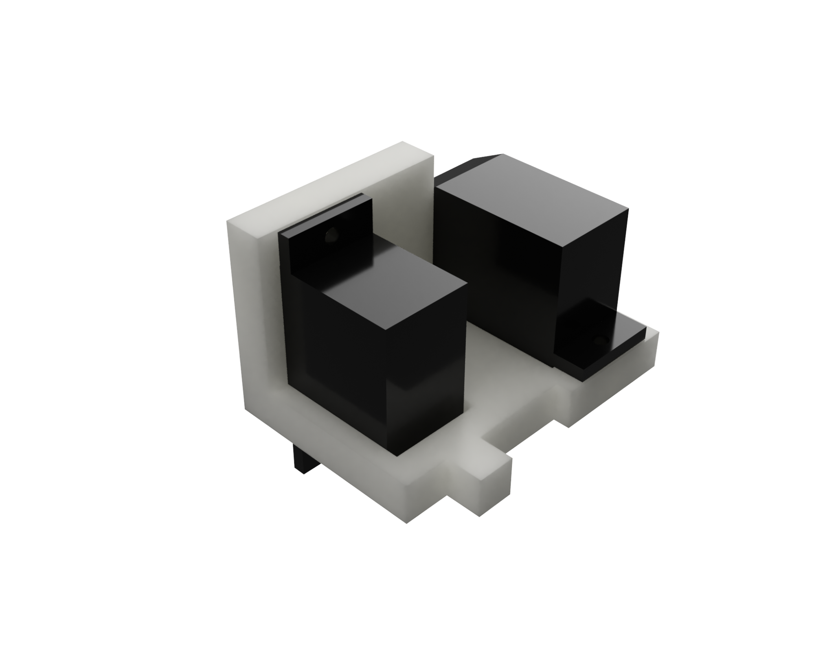
You can view this model in 3D by following this link:http://a360.co/2vYmzKM
If you are prompted for a password, enter "EarlyMaker"
The following plan contains all the dimensions that can be useful to you during this exercise: so that the modeled piece is fully functional, be sure to respect them.
You can view a more detailed plan by following this link: http://a360.co/2vXYZ0B
Proceed by sub-assemblies and build with simple shapes that you group as you go: you can group objects already forming a group. Always use the ruler, making sure it is positioned correctly each time you move it.
Once your model is completed, you can download it to print it in 3D.